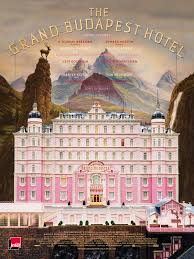
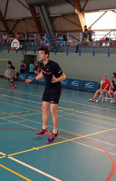

Bored of bullshit classes at EDHEC Business School, I am now learning coding skills with Le Wagon
|  | Le film retrace les aventures de Gustave H, l’homme aux clés d’or d’un célèbre hôtel européen de l’entre-deux-guerres et du garçon d’étage Zéro Moustafa, son allié le plus fidèle. La recherche d’un tableau volé, oeuvre inestimable datant de la Renaissance et un conflit autour d’un important héritage familial forment la trame de cette histoire au coeur de la vieille Europe en pleine mutation. |
|  | Contrairement à ce que l'on pense, le badminton est loin d'être un sport de plage: technique, tactique et physique sont au coeur de la stratégie. |